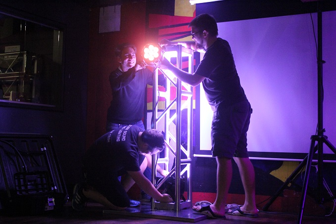

Alien Sound And Lighting
IIT's #1 source for sound and lighting!

About Us
Alien Sound and Lighting is a student-run organization dedicated to bringing professional quality sound and lighting to the IIT campus. Our equipment is often times much better than most private companies, and our training program for our members is led by industry professionals. The best part about Alien? Since we are currently funded by the Student Activity Fund, our services are free to IIT Student Clubs! Interested in hiring us for your club's event? Fill out our online request form here!

Join Alien!
Are you interested in learning more about sound and lighting? There is no better time than the present to learn. No matter your experience level - we have something to offer for everyone! While sound and lighting might seem like a daunting task to learn at first, most people find that it is easier than they think to learn the basics. Once you have learned the basics, it is a lot of fun to learn how to make sound and lighting into an art form that can benefit you across all facets of life! Our team consists of everyone from beginners to industry professionals; all of whom promote an open learning environment. We guarantee that you will not be disappointed! To inquire about joining Alien Sound and Lighting, please email alien@iit.edu.Frequently Asked Questions
Q: How much notice do you need for an event?
A: A minimum of 2 weeks notice is required to request an event. It is strongly recommended that you contact us even earlier, since we prioritize event requests on a first come, first serve basis.
Q: Can you do events off campus?
A: No. Due to IIT's insurance policy, we are not allowed to do events off campus. We also can not purchase additional insurance for legal reasons, this has been looked into in the past.
Q: How much does it cost to do our event?
A: Nothing is charged directly to your organization. In the past we charged your organization for our services, and in turn you would ask for funding through the Student Activity Fund. While this was a more "fair" way of funding Alien (since the amount
of funding we received was directly proportionate to the events we helped with), it was also confusing to some people. We are now directly funded through the SAF so that it is easier for you and so that there are no direct charges to your organization.
Q: I requested an event, but I haven't heard back from you. How do I know what the status is?
A: We are sorry that we haven't gotten back to you yet. Because our members are volunteers, it can sometimes be hard to work out the logistics of your event. We will generally try to give you at least one week's notice if we can't do an event, we can't
promise much more than that. To check to see what the status is, feel free to email
alien@iit.edu.
Q: We are unable to make your event anymore. What now?
A: Event Services may be able to help with your events (although there may be a charge for their help). You can email them at events@iit.edu. If for some reason they are unable to accommodate
you, feel free to ask us for recommendations of companies in the area that might be able to meet your needs. Our staff has a good working relationship with many AV companies in the Chicagoland area, and chances are we know someone who would
be perfect for your event!
Q: Can I or my student organization borrow Alien's equipment if your staff isn't available?
A: NO. Per the Judicial Board decision on case number 20130301A, our equipment may only operated by trained students. If you are interested in joining us and being trained on our equipment so that you might be able to run our equipment
for your organization in the future, feel free to email us at
alien@iit.edu.
Q: How can I join Alien?
A: To become an official member, please email
alien@iit.edu to express interest in joining us. The requirement for being an Alien member is that you work a minimum of 3 events with our trained staff. During these events you will be trained
on our equipment. The more you work with us, the more equipment you will be allowed to use.
Q: Can I send an event request by email?
A: Please do not send event requests by email. You can request here! If for some reason you can't submit via our web portal (browser incompatibility, site is down, etc), you may send us a request by email
as long as you specify why it is being sent via email. Any requests received via email will not be official unless a valid reason for not submitting on the web-portal is given. If you do need to send a request by email, please include the following
information:
- Name of your student organization
- Your name
- Your email address
- Your phone number
- The date(s) of your event
- The start and approx. end time of your event
- Description of the event
- Summary of what you are looking for from us
- The location of the event
- Name of your student organization
- Your name
- Your email address
- Your phone number
- The date(s) of your event
- The start and approx. end time of your event
- Description of the event
- Summary of what you are looking for from us
- The location of the event
Contact us
To request Alien Sound and Lighting's services for an event, please fill out our request form here!
For all other inquiries, please email our exec board at: alien@iit.edu.